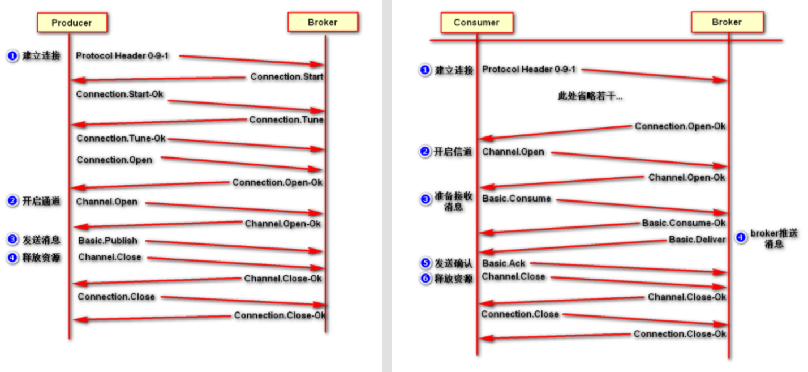

一、MQ相关的概念
1、MQ的基本概念
什么是MQ
MQ(message queue)，从字面意思上看就个 FIFO 先入先出的队列，只不过队列中存放的内容是 message 而已，它是一种具有接收数据、存储数据、发送数据等功能的技术服务。
在互联网架构中，MQ 是一种非常常见的上下游“逻辑解耦+物理解耦”的消息通信服务，用于上下游传递消息。使用了 MQ 之后，消息发送上游只需要依赖 MQ，不用依赖其他服务
为什么要用MQ
-
高并发的流量削峰
- 问题：在高并发场景下，系统可能无法处理突发的请求，导致服务崩溃或响应变慢。
- 解决方案：消息队列可以作为缓冲区，将请求暂存起来，消费者按照自己的处理能力逐步消费。
- 好处：平滑流量峰值，避免系统过载，提高系统的稳定性。
-
应用解耦
- 问题：在紧耦合的系统中，一个组件的变更可能会影响其他组件，导致系统难以维护和扩展。
- 解决方案：消息队列允许生产者和消费者通过异步通信解耦，生产者只需将消息发送到队列，而不需要知道消费者的具体实现。
- 好处：系统组件可以独立开发、部署和扩展，降低复杂性。
-
异步通信
- 问题：同步通信（如 HTTP 请求）会导致调用方阻塞，直到被调用方完成处理，影响系统性能。
- 解决方案：消息队列支持异步通信，生产者发送消息后可以立即返回，消费者在合适的时候处理消息。
- 好处：提高系统的响应速度和吞吐量，尤其适合处理耗时任务（如发送邮件、生成报表等）。
-
分布式事务
- 问题：在分布式系统中，不同服务可能部署在不同的节点上，直接通信可能复杂且低效。
- 解决方案：消息队列作为中间件，提供统一的通信机制，简化分布式系统的设计和实现。
- 好处：支持跨语言、跨平台通信，方便构建分布式架构。
-
数据分发
- 问题：单个消费者可能无法处理大量任务，导致性能瓶颈。
- 解决方案：消息队列可以将任务分发给多个消费者，实现负载均衡。
- 好处：充分利用系统资源，提高任务处理效率。
2.消息队列协议
1. AMQP（Advanced Message Queuing Protocol）
提供统一消息服务的应用层标准高级消息队列协议，是应用层协议的一个开放标准，为面向消息的中间件设计。基于此协议的客户端与消息中间件可传递消息，并不受客户端/中间件不同产品，不同的开发语言等条件的限制。
- 特点：
- 开放标准的消息协议，支持跨平台和跨语言。
- 提供丰富的消息模式（如点对点、发布/订阅）。
- 支持事务、消息确认和持久化。
- 优点：
- 灵活、可靠，适合复杂的消息通信场景。
2. MQTT（Message Queuing Telemetry Transport）
它是一种基于发布/订阅（publish/subscribe）模式的"轻量级"通讯协议，该协议构建于TCP/IP协议上.
- 特点：
- 轻量级的发布/订阅协议，专为低带宽、不稳定的网络设计。
- 支持三种消息传递质量（QoS）：最多一次、至少一次、恰好一次。
- 适合物联网（IoT）场景。
- 优点：
- 简单、高效，适合资源受限的设备。
3. Kafka Protocol
基于TCP/IP的二进制协议。消息内部是通过长度来分割，由些基本数据类型组成。
- 特点：
- 专为高吞吐量、分布式流处理设计。
- 基于二进制协议，性能高效。
- 支持持久化日志和流式处理。
- 优点：
- 高吞吐量、低延迟，适合大数据和实时处理场景。
3.消息队列持久化
持久化简单来说就是将数据存入磁盘，而不是存在内存中随服务器重启断开而消失，使数据能够永久保存。
4.消息的分发策略
1. 发布/订阅（Publish/Subscribe）
- 特点：
- 消息发送到一个主题（Topic）中，所有订阅该主题的消费者都会收到消息。
- 消息会被广播给多个消费者。
- 适用场景：
- 事件通知、日志广播等需要消息被多个消费者处理的场景。
2. 轮询分发（Round Robin）
- 特点：
- 消息依次分发给多个消费者，确保每个消费者处理的消息数量大致相同。
- 适用场景：
- 负载均衡，适用于消费者处理能力相近的场景。
3. 延迟分发（Delayed Dispatch）
- 特点：
- 消息在指定的延迟时间后被分发给消费者。
- 适用场景：
- 定时任务、重试机制等需要延迟处理的场景。
4. 公平分发（Fair Dispatch）
- 特点：
- 根据消费者的处理能力动态分发消息，避免某些消费者过载。
- 只有在消费者确认处理完当前消息后，才会接收下一条消息。
- 适用场景：
- 消费者处理能力不均衡的场景。
二、RabbitMQ
1.RabbitMQ的概念
RabbitMQ 是一个消息中间件：它接受并转发消息。可以把它当做一个快递站点，当你要发送一个包裹时，你把你的包裹放到快递站，快递员最终会把你的快递送到收件人那里，按照这种逻辑 RabbitMQ 是一个快递站，一个快递员帮你传递快件。RabbitMQ 接收，存储和转发消息数据。
2. AMQP协议
RabbitMQ是一种遵循AMQP协议的分布式消息中间件。AMQP 全称 “Advanced Message Queuing Protocol”，高级消息队列协议。它是应用层协议的一个开发标准，为面向消息的中间件设计。
下图是采用 AMQP 协议的生产者和消费者建立和释放连接的流程图：
3. RabbitMQ架构组成
-
Broker : 标识消息队列服务器实体rabbitmq-server
-
v-host :
Virtual Host虚拟主机。标识一批交换机、消息队列和相关对象。虚拟主机是共享相同的身份认证和加密环境的独立服务器域。每个vhost本质上就是一个mini版的RabbitMQ服务器，拥有自己的队列、交换器、绑定和权限机制。vhost是AMQP概念的基础，必须在链接时指定，RabbitMQ默认的vhost是 /。 -
Exchange: 交换器用来接收生产者发送的消息并将这些消息路由给服务器中的队列。
-
Queue : 消息队列，用来保存消息直到发送给消费者。它是消息的容器，也是消息的终点。一个消息可投入一个或多个队列。消息一直在队列里面，等待消费者连接到这个队列将其取走。
-
Banding : 绑定，用于消息队列和交换机之间的关联。一个绑定就是基于路由键将交换机和消息队列连接起来的路由规则，所以可以将交换器理解成一个由绑定构成的路由表。
-
Channel : 信道，多路复用连接中的一条独立的双向数据流通道。信道是建立在真实的TCP连接内地虚拟链接，AMQP命令都是通过信道发出去的，不管是发布消息、订阅队列还是接收消息，这些动作都是通过信道完成。因为对于操作系统来说，建立和销毁TCP都是非常昂贵的开销，所以引入了信道的概念，以复用一条TCP连接。
-
Connection : 网络连接，比如一个TCP连接。
4. 四大核心概念
-
生产者：产生数据发送消息的程序是生产者。
-
交换机：交换机是 RabbitMQ 非常重要的一个部件，一方面它接收来自生产者的消息，另一方面它将消息推送到队列中。交换机必须确切知道如何处理它接收到的消息，是将这些消息推送到特定队列还是推送到多个队列，亦或者是把消息丢弃，这个是由交换机类型决定的。
-
队列：队列是 RabbitMQ 内部使用的一种数据结构，尽管消息流经 RabbitMQ 和应用程序，但它们只能存储在队列中。队列仅受主机的内存和磁盘限制的约束，本质上是一个大的消息缓冲区。许多生产者可以将消息发送到一个队列，许多消费者可以尝试从一个队列接收数据。
-
消费者：消费与接收具有相似的含义。消费者大多时候是一个等待接收消息的程序。请注意生产者，消费者和消息中间件很多时候并不在同一机器上。同一个应用程序既可以是生产者又是可以是消费者。